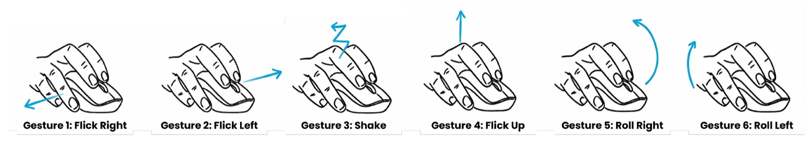
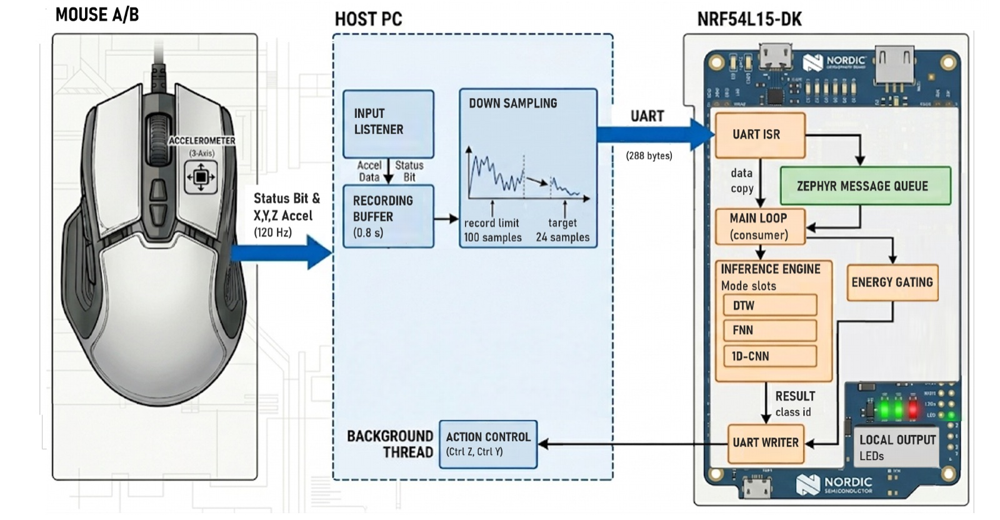

Gesture Detection with Accelerometer


Can a computer mouse recognise gestures using only its built-in 3-axis accelerometer? This thesis explores gesture recognition as a way to trigger shortcuts on productivity mice without additional hardware. It combines real data collection with a synthetic data pipeline built on Unity3D and the Captury Live motion-capture system, which models biomechanical diversity, sensor placement and device geometry. A dedicated "Null" class separates intentional gestures from routine mouse repositioning.
Three classifiers — 1D-CNN, feed-forward network and Dynamic Time Warping — were trained, quantized and deployed on the Nordic nRF54L15-DK.
- 0.91
- Macro F1, 12-class 1D-CNN
- 2.70 ms
- CNN inference on nRF54L15
- 4.9 KB
- 8-bit quantized CNN
- 0.24 KB
- "Two-Pass" DTW, 0.32 ms